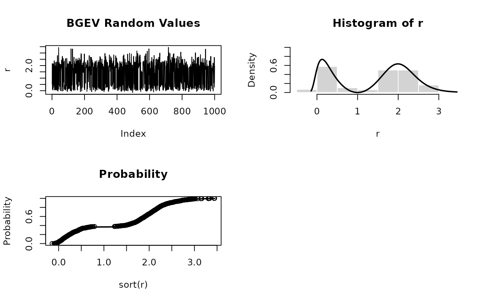

Functions to compute the density, distribution function, quantile function, and to generate random variates for the bgebv (bimodal generalized extreme value)
Usage
dbgev(x, mu = 1, sigma = 1, xi = 0.3, delta = 2)
pbgev(q, mu = 1, sigma = 1, xi = 0.3, delta = 2)
qbgev(p, mu = 1, sigma = 1, xi = 0.3, delta = 2)
rbgev(n, mu = 1, sigma = 1, xi = 0.3, delta = 2)Value
- dbgev
density values
- pbgev
distribution function values
- qbgev
quantile function values
- rbgev
random variates
Details
This distribution corresponds was proposed by in Cira EG Otiniano, Bianca S Paiva, Roberto Vila and Marcelo Bourguignon (2021)
Note
BGEV distribution is equivalent to the GEV distribution when delta = 0.
When comparing BGEV with GEV from package EnvStats, the shape parameter of GEV
is changed to -xi due to reparametrization
References
Otiniano, Cira E. G., et al. (2023). A bimodal model for extremes data. Environmental and Ecological Statistics, 1–28. doi:10.1007/s10651-023-00566-7
Examples
par(mfrow = c(2, 2))
set.seed(1000)
r <- rbgev(n = 1000)
plot(r, type = "l", main = "BGEV Random Values")
hist(r, probability = TRUE, border = "white", ylim = c(0,1))
x <- seq(min(r), max(r), length = 201)
lines(x, dbgev(x), lwd = 2)
plot(sort(r), (1:1000)/1000, main = "Probability", ylab = "Probability")
lines(x, pbgev(x), lwd = 2)
round(qbgev(pbgev(q = seq(0, 3, by = 0.1)), 6),2)
#> [1] 5.0 5.1 5.2 5.3 5.4 5.5 5.6 5.7 5.8 5.9 6.0 6.1 6.2 6.3 6.4 6.5 6.6 6.7 6.8
#> [20] 6.9 7.0 7.1 7.2 7.3 7.4 7.5 7.6 7.7 7.8 7.9 8.0
